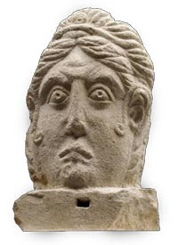

|  |
Weston Gallery of Roman Britain
This gallery is closed for redevelopment until 2007
Britain became a province of the Roman Empire in AD43.
In spite of previous contact with the Roman world, the conquest
brought profound changes. Latin became the official language, and
Britain's law, administrative system and currency were those of
Rome. Towns, imposing stone and brick buildings, roads and bridges,
Classical religion and art all became familiar. The vastly increased
choice of everyday goods included many imports. Settlers from other
provinces in Europe, the Middle East and North Africa created a
richer and more diverse society. When added to the traditions of
Iron Age society - see Gallery 50 - a
distinctive 'Romano-British' identity was created by the people
who lived in
the province.
The
gallery shows the great variety of material culture in Roman Britain,
from exceptional pieces to objects of everyday life. These include
mosaics, wall paintings, sculpture, precious treasures, glassware
and metalwork. They comprise
individual finds and material from important excavations the Museum
has been involved in over the years. A particular strength of the
collections are objects relating to early Christianity.
The Education department
also has a number of pages on Roman Britain.
 floor map floor map
opening hours
|